![]()
At the end of June 2024, Posit released a beta version of its next-generation IDE for data science: Positron. This follows Posit’s general vision for language-agnostic data analysis software: RStudio PBC renamed itself to Posit PBC in 2022 to help move away from a pure R focus, and Quarto is pan-lingual successor to R Markdown. Having the name of the main programming language in the title of things is out—providing more general tools is in.
Positron is essentially a specialized version of Microsoft’s Visual Studio Code, and is a fork of the underlying Code - OSS that powers VS Code. I’m super excited about this—in my own work, I use RStudio for most things R-related and VS Code for everything else (Stan, Python, HTML, CSS, Lua, LaTeX, Typst, etc.). VS Code is phenomenal and I love using it. It’s the best way to edit files on a remote server. It’s the best way to interact with Docker containers and Docker Compose. GitHub Copilot Chat is fantastic.
But for me, it’s never quite been a replacement for RStudio. Every couple months, I play around with trying to use VS Code for R work full time, but the constellation of VS Code R extensions (like the R extension and Radian for the terminal) and general R support has never been what I want, and I always end up going back to RStudio. Which is fine! I adore RStudio too and have been using it since it first came out in beta in February 2011 (13 years!).
Positron brings pretty much all the little R-related things that I love from RStudio and have missed in Visual Studio Code. The regular collection of VS Code’s R extensions and add-ons is no longer necessary, since Posit has created a custom R kernel—Ark—for any text editor or IDE with Jupyter support. It’s still a beta product and a little rough around the edges, but I’ve found that it really is the perfect blend of the best parts of RStudio and VS Code.
Below, following the example of Marc Dotson and Christopher Kenny, I want to highlight some of the neat new things Positron can do and share some of the settings, extensions, and other customizations I’ve been using for the past couple weeks.
Some cool new things
Positron brings RStudio’s best features to other languages like Python, like line-by-line code execution:
…and the variables panel (equivalent to the Environment panel in RStudio):
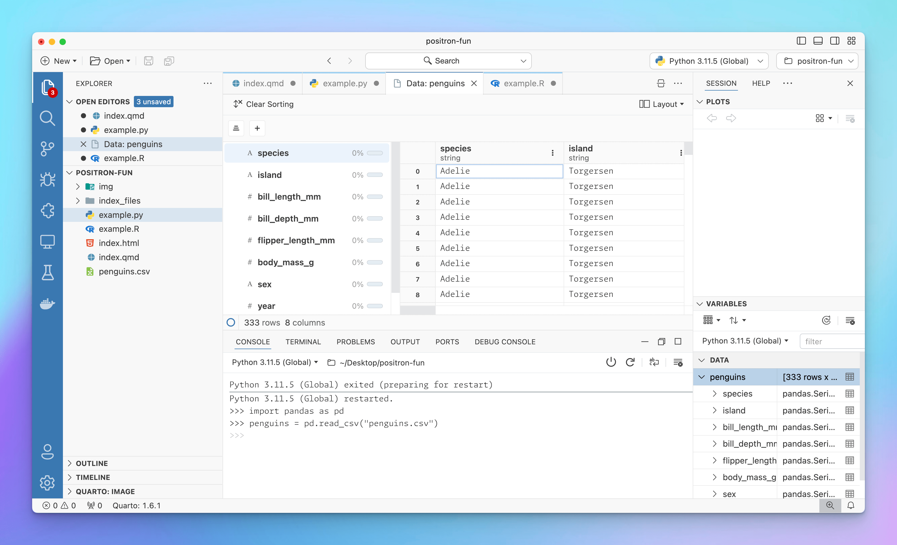
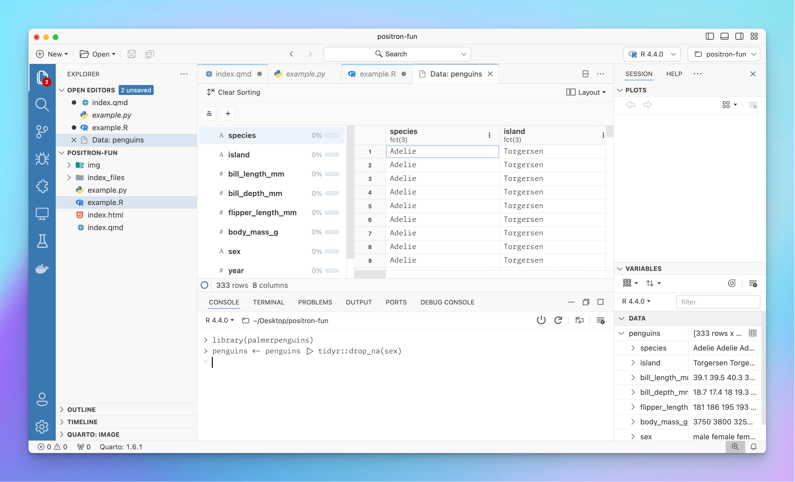
You can also switch between different R and Python installations and versions. If you have rig installed, you can switch between different R versions, and Positron scans your computer at startup to find all the different Python virtual environments you have. I think eventually that little menu might also have better support for {renv} too. Here I can switch between R 4.4.0 and 4.3.3, as well as a bunch of random Python virtual environments and installations (lol python installations are the worst):
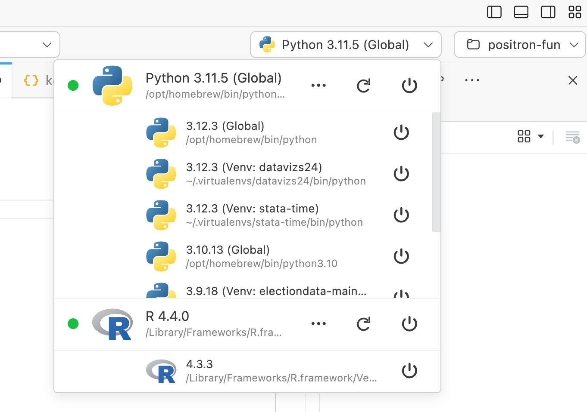
Plus, since it’s just a fancy version of VS Code, Positron supports pretty much everything VS Code can do, including making complex layouts. Use the little menu in the top right corner to set up your workspace however you want:
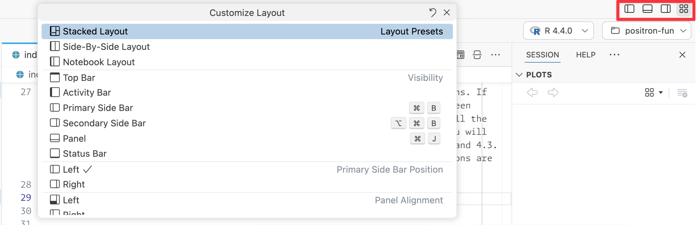
For instance, here’s an example of a fully armed and operational layout I’ve been using for one project:
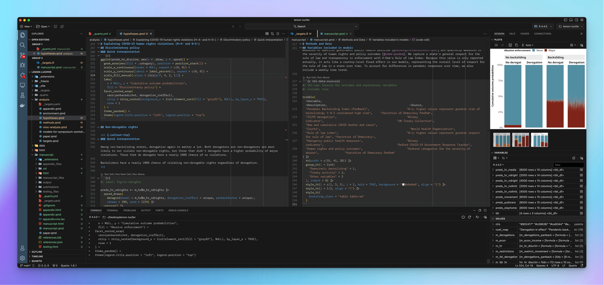
My settings
Positron (and VS Code in general) stores all its settings in a JSON file named settings.json that’s stored somewhere on your computer. On macOS it’s in ~/Library/Application Support/Positron/User/settings.json (see here for other operating systems). But you don’t need to ever remember that!
When you open Positron’s settings (with ⌘, on a Mac; using… something… on Windows), Positron provides a nice frontend for searching, managing, and changing settings so you don’t need to edit raw JSON if you don’t want to.
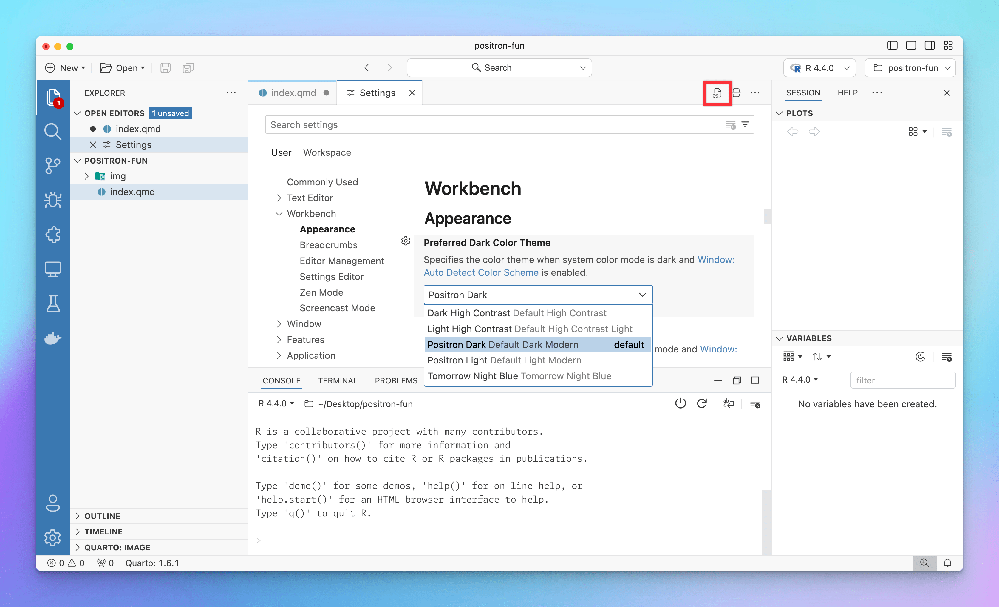
If you click on the document button in the top right corner, you can open the actual settings.json file in the editor and make changes there. This is the easiest way to share settings with other people (like in this blog post) or with yourself (you can commit settings.json to a git repository, for instance).
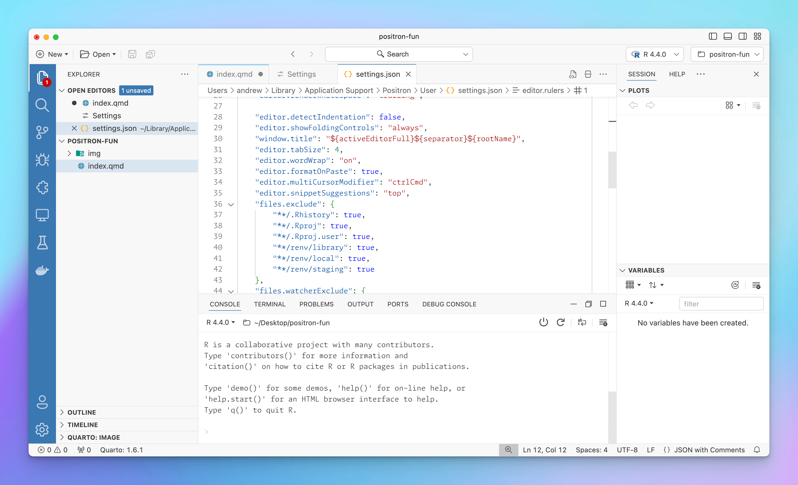
Configuring and customizing Positron involved basically copying most of my settings from VS Code’s settings.json into Positron’s settings.json. Here’s everything I have set up, with comments explaining stuff. A few things to note in particular:
I set
rstudio.keymap.enabletotrueto enable most of RStudio’s R-related keyboard shortcuts (like ⌘⌥I for a new chunk, ⌥- to insert<-, etc.).I’m using GitHub’s Monaspace font because it looks neat and it has excellent font ligatures. I’ve enabled a bunch of different stylistic sets for the ligatures.
I’m a big fan of the Monokai color theme and use it in RStudio and VS Code. It’s easy enough to set in Positron too, but for mysterious unknown reasons, it uses colors differently and is overly aggressive in what gets colorized. Compare this ggplot code across three different Monokais (VS Code, Positron, and RStudio). The Positron version is incredibly green and pink, while VS Code and RStudio use color more sparingly.
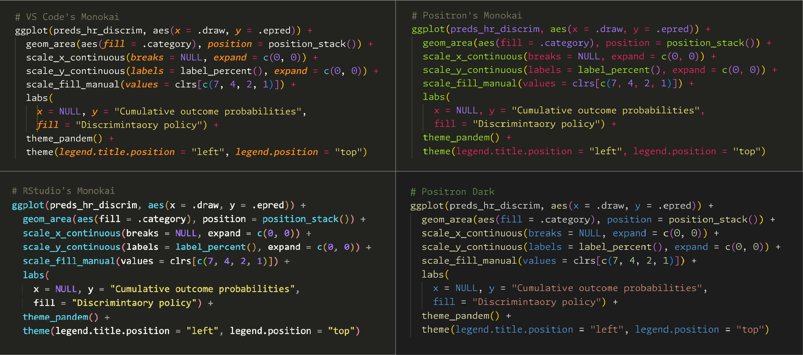
Monokai highlighting in VS Code, Positron, and RStudio + Positron Dark So for now, I’m using the Positron Dark theme instead, which does the best job of highlighting the things that RStudio did. It’s nice enough.
Here’s my settings.json file. Adapt from it however you want. All these settings are also accessible in the GUI too.
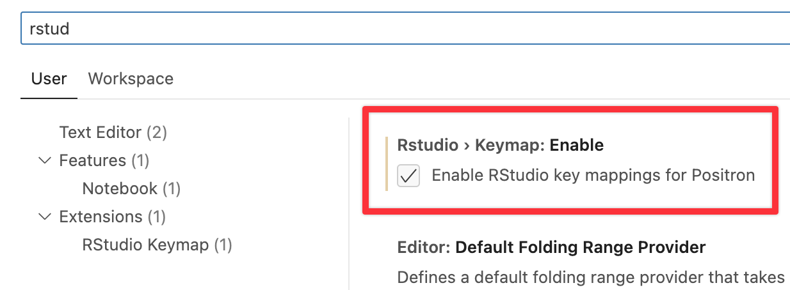
There are some extension-specific options at the bottom that I’ll explain below too.
settings.json
{
// Positron-specific settings
// -------------------------------------------------------------------------
"rstudio.keymap.enable": true,
"python.defaultInterpreterPath": "/opt/homebrew/bin/python",
// Editor settings
// -------------------------------------------------------------------------
// Fonts
// Use GitHub's Monaspace (https://github.com/githubnext/monaspace) and enable ligatures
"editor.fontFamily": "'Monaspace Argon Var'",
"editor.fontSize": 12.5,
"editor.fontLigatures": "'ss01', 'ss02', 'ss03', 'ss04', 'ss05', 'ss06', 'ss07', 'ss08', 'calt', 'dlig', 'liga'",
// Theme
// Monakai would be nice, but it has issues in Positron
// "workbench.colorTheme": "Monokai",
"workbench.colorTheme": "Default Dark Modern",
// Use nicer icons
"workbench.productIconTheme": "fluent-icons",
"workbench.iconTheme": "material-icon-theme",
// Highlight modified/unsaved tabs
"workbench.editor.highlightModifiedTabs": true,
// Add some rulers
"editor.rulers": [
80,
100
],
// Indent with two spaces, but only for R
"[r]": {
"editor.tabSize": 2
},
// Nicer handling of end-of-document newlines, via
// https://rfdonnelly.github.io/posts/sane-vscode-whitespace-settings/
"files.insertFinalNewline": true,
"editor.renderFinalNewline": "dimmed",
"editor.renderWhitespace": "trailing",
"files.trimFinalNewlines": true,
"files.trimTrailingWhitespace": true,
// Various editor settings
"editor.formatOnPaste": true,
"editor.detectIndentation": false,
"editor.showFoldingControls": "always",
"window.newWindowDimensions": "inherit",
"editor.scrollBeyondLastLine": false,
"window.title": "${activeEditorFull}${separator}${rootName}",
"editor.tabSize": 4,
"editor.wordWrap": "on",
"editor.multiCursorModifier": "ctrlCmd",
"editor.snippetSuggestions": "top",
// Hide things from the global search menu and watcher
"files.exclude": {
"**/.Rhistory": true,
"**/.Rproj": true,
"**/.Rproj.user": true,
"**/renv/library": true,
"**/renv/local": true,
"**/renv/staging": true
},
"files.watcherExclude": {
"**/.Rproj/*": true,
"**/renv/library": true,
"**/renv/local": true,
"**/renv/staging": true
},
// Sign git commits
"git.enableCommitSigning": true,
// Extension-specific settings
// -------------------------------------------------------------------------
// Markdown linting settings (idk if this stuff even works with Quarto though)
"markdownlint.config": {
"default": true,
"MD012": { "maximum": 2 },
"MD025": false,
"MD041": false
},
// Wrap at 80 columns with the "Rewrap" extension
"rewrap.wrappingColumn": 80,
// Hacky "Open Remote - SSH" settings
"remote.SSH.serverDownloadUrlTemplate": "https://github.com/gitpod-io/openvscode-server/releases/download/openvscode-server-v${version}/openvscode-server-v${version}-${os}-${arch}.tar.gz",
"remote.SSH.experimental.serverBinaryName": "openvscode-server",
// Don't phone home for the "YAML" extension
"redhat.telemetry.enabled": false,
}My keyboard shortcuts
Changing keyboard shortcuts is just like changing settings. All the settings are stored in a JSON file (keybindings.json) located in a special folder on your computer, but you don’t have to work with raw JSON if you don’t want to.
The easiest way to get to the keyboard shortcut settings page is to open the Command Palette (⌘⇧P on macOS; ctrl + shift + p on Windows) and search for “Open Keyboard Shortcuts”:
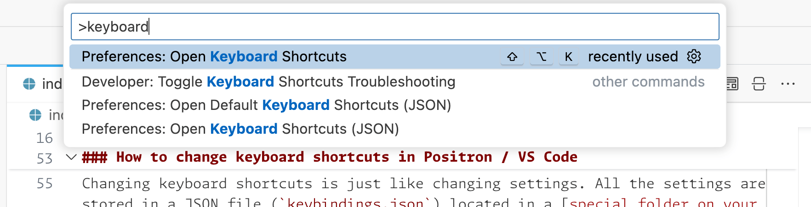
This will give you a nice page for changing different settings. There are hundreds of possible shortcuts, but there’s a nice filtering system you can use to narrow things down.
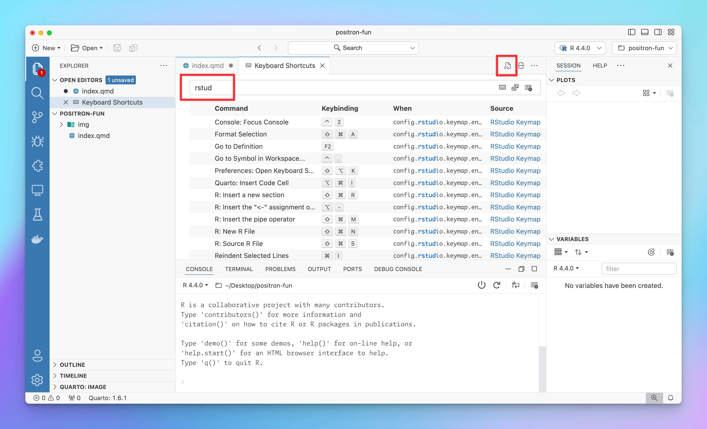
If you click on the little document icon at the top, it will open the actual JSON file, just like with settings.json:
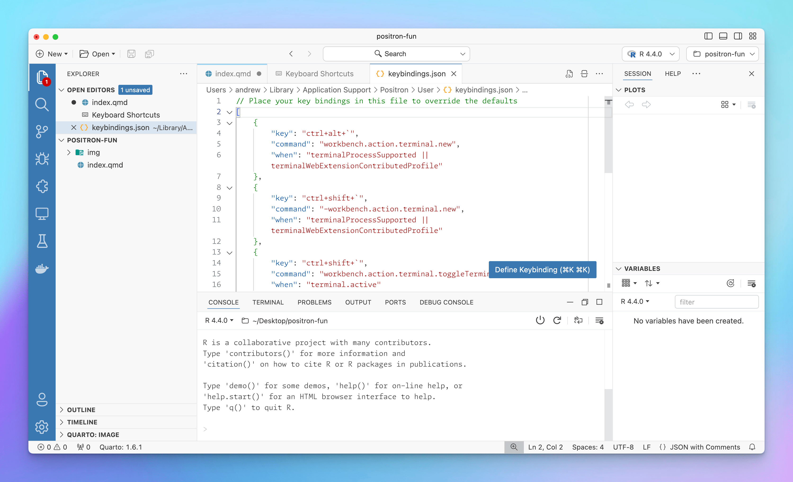
Enabling Positron’s RStudio Keymap option with rstudio.keymap.enable takes care of like 90% of my keyboard customization needs. Years ago when I first switched to VS Code, I changed several of RStudio’s keyboard shortcuts to match VS Code’s like ⌘/ for toggling commented code instead of RStudio’s default ⌘⇧C. Positron uses ⌘/ by default for comment toggling too, but when you enable the RStudio Keymap option, that gets overridden with ⌘⇧C, so I disable that.
RStudio also uses ⌘D for deleting a line, while VS Code uses it for adding text to a selection (i.e. if I select the word “the” in this document and then press ⌘D a bunch of times, it’ll add all those “the”s to the selection). The RStudio Keymap option adds ⌘D to delete the current line, so I disable that shortcut too to bring things back in line with standard VS Code.
Finally, I use iTerm2 for macOS for my systemwide terminal, and I have it configured with a global hotkey ^` so I can access the terminal from everywhere. This conflicts with VS Code’s and Positron’s terminal toggling shortcut, which is the same, so I change it to be ^⇧`.
Here’s my keybindings.json file. Like with settings.json, these are also accessible in the GUI.
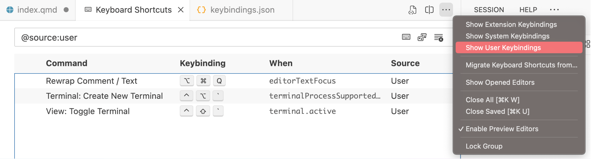
keybindings.json
[
{
"key": "ctrl+alt+`",
"command": "workbench.action.terminal.new",
"when": "terminalProcessSupported || terminalWebExtensionContributedProfile"
},
{
"key": "ctrl+shift+`",
"command": "-workbench.action.terminal.new",
"when": "terminalProcessSupported || terminalWebExtensionContributedProfile"
},
{
"key": "ctrl+shift+`",
"command": "workbench.action.terminal.toggleTerminal",
"when": "terminal.active"
},
{
"key": "ctrl+`",
"command": "-workbench.action.terminal.toggleTerminal",
"when": "terminal.active"
},
{
"key": "shift+cmd+c",
"command": "-editor.action.commentLine",
"when": "config.rstudio.keymap.enable && editorTextFocus"
},
{
"key": "alt+cmd+q",
"command": "rewrap.rewrapComment",
"when": "editorTextFocus"
},
{
"key": "alt+q",
"command": "-rewrap.rewrapComment",
"when": "editorTextFocus"
},
{
"key": "cmd+d",
"command": "-editor.action.deleteLines",
"when": "config.rstudio.keymap.enable && editorTextFocus"
}
]My extensions
Installing extensions in Positron / VS Code is super straightforward (see here). Click on the Extensions icon in the main Activity Bar, search for an extension, and click on “Install”. You can also disable or uninstall existing extensions from here.
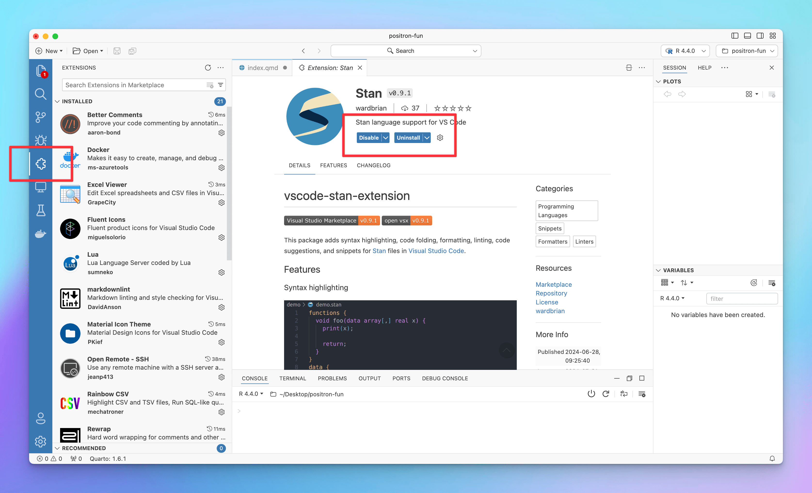
One of the best things about Positron is that it has access to most of VS Code’s extensions. Positron is not allowed to access Microsoft’s Visual Studio Extension Marketplace, but it can access (and is a major sponsor of) the alternative Open VSX Registry. With the exception of Microsoft’s extensions like GitHub Copilot, Dev Containers, and Remote - SSH, Open VSX had pretty much all the extensions that I already regularly use in VS Code.
The only minor VS Code extension I normally use that I couldn’t install in Positron was Stata Enhanced (Not that I even ever use Stata—I don’t have it installed on my computer and don’t have a license, but it’s nice to be able to open .do files and see syntax highlighting). Stata Enhanced isn’t listed at Open VSX, but I’ve opened an issue requesting that it gets listed.
Here’s what I use:
- Managing other environments
- Docker: Manage Docker containers and volumes; right click on
docker-compose.ymlfiles to spin them up and shut them down; syntax highlighting for Dockerfiles and Docker Compose - Open Remote - SSH: Connect to remote servers with SSH. This is bundled with Positron and there’s no need to install anything.
- Docker: Manage Docker containers and volumes; right click on
- Text editing
- Rewrap: Automatically add line breaks in long comments or text (I have it set to wrap at 80 characters using ⌘⌥Q)
- Better Comments: Add special syntax highlighting for some types of comments like
TODO,?,!, and so on - Shebang Snippets: Provides snippets for adding shebang directives (e.g. type
#!pythonto get#!/usr/bin/env python)
- Viewers and syntaxes
- Excel Viewer: View .xlsx files
- vscode-pdf: View PDFs
- Rainbow CSV: Does neat syntax highlighting for CSV files (highlighting each column with specific colors)
- Stan: Syntax highlighting for Stan
- YAML: Syntax highlighting for YAML
- Lua: Syntax highlighting for Lua
- markdownlint: Linting and style suggestions for Markdown
- Theme stuff
- Material Icon Theme: Customize the icons associated with specific file types in the file explorer
- Fluent Icons: Customize the icons in the general Positron app (primarily the icons in the Activity Bar, like Explorer, Search, Source Control, etc.)
Remote connections with SSH
One of the best features of VS Code is its ability to connect to remote servers through SSH, but because that’s enabled with a special closed source Microsoft extension, it doesn’t work in Positron.
The Open Remote - SSH extension replicates Microsoft’s remote SSH extension, and it’s available at Open VSX. However, it doesn’t work with Positron immediately—you’ll get an error when connecting. This now works and there’s no need to install anything! (See this for a previous partial workaround.)
As of August 2024, Positron now bundles an SSH extension that Just Works™. If you have R or Python installed on a remote server, you can connect to it and run code remotely and it’s all great and wonderful now.
Things I still wish Positron could do
Positron is still in beta and is undergoing rapid development, and that’s totally fine. Even though it’s not a finished product yet, it works really really well.
There are still some things I wish it could do though. Some of these will eventually be addressed; some can’t because of Microsoft.
Packages panel: I love RStudio’s Packages panel. It’s so helpful for seeing which packages are currently installed, which versions are installed, updating existing packages, and installing new ones.
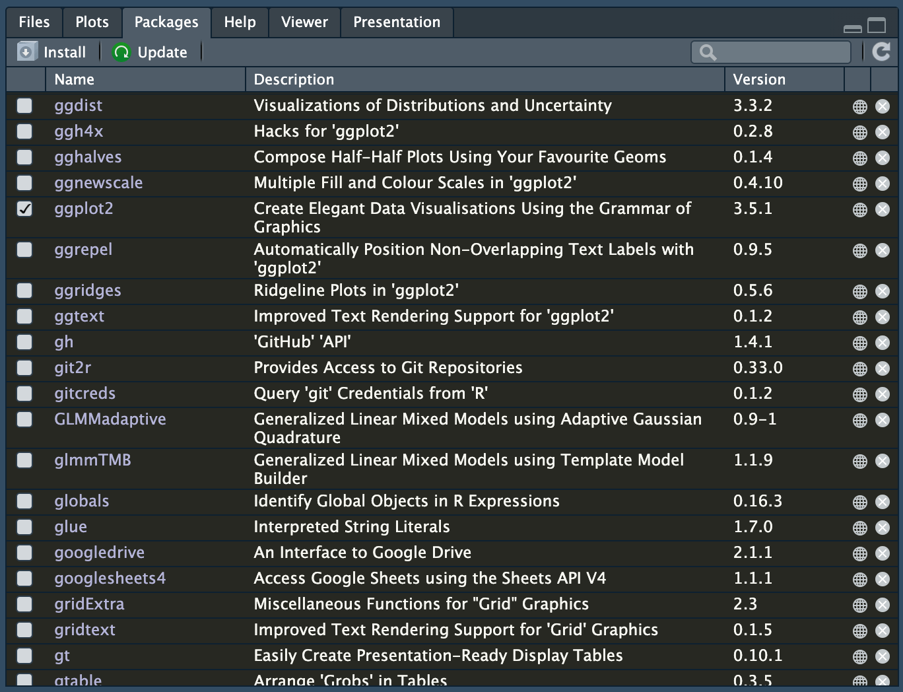
RStudio’s Packages panel Nothing like this exists for Positron right now, but there’s discussion about how to build something like it (that would also work for Python).
Plot dimensions: (This will hopefully be addressed someday). In RStudio, when working with Quarto and R Markdown documents, inline images use the dimensions that you set in the chunk options, which makes it really easy to tinker with plot dimensions (i.e. changing from
fig-width: 2.5tofig-width: 2.75to make sure labels fit in the plot area). Current, plots in Positron show up in the plots panel and use whatever dimensions that panel is set to use, either by manually resizing it or by using a dropdown menu with specific sizes: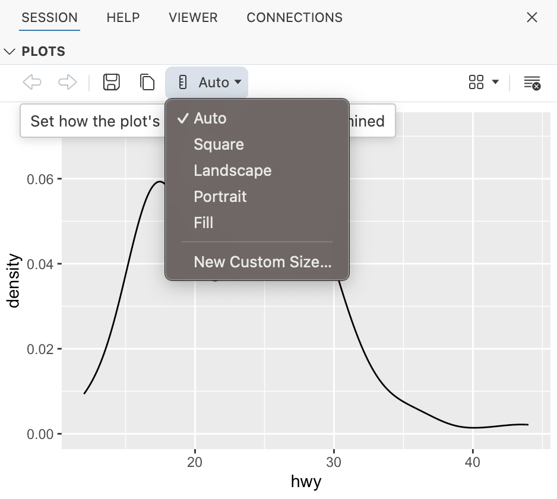
Positron’s plot panel It would be cool if Positron’s plot panel could pick up the dimensions specified in a Quarto document and auto-resize to match. For now, I’ve just been using the “Custom Size” option. If I want to preview an image that’s 5 inches wide and 3.75 inches tall, I convert the ratio of width/height to pixels. It’s not exact—there are issues with different DPIs and retina screens—but it at least shows the correct proportion.
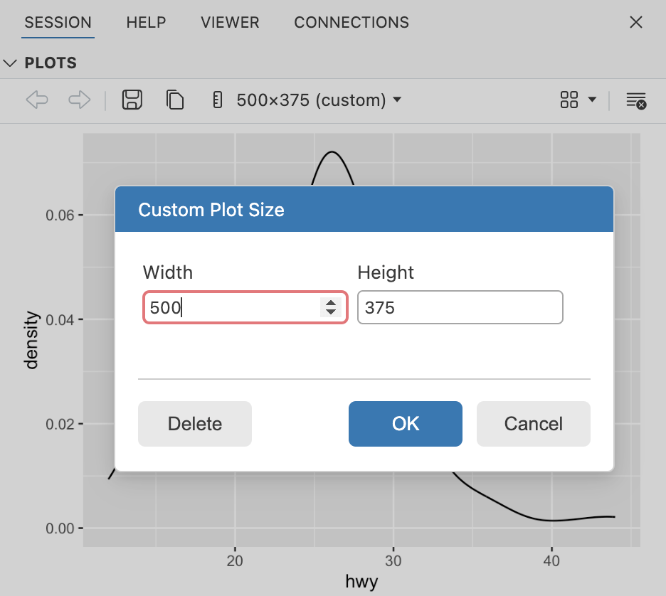
Custom sizes in Positron’s plot panel Remote editing and execution with Open Remote - SSH: It would be incredible if (1) it were a lot easier to install Open Remote - SSH, and (2) it were possible to run code on remote servers. I think they’re working on supporting this.
Similar to this, but less important to me because I don’t use Docker containers this way, VS Code can work with Docker containers with the Dev Containers extension, similar to SSH, using Docker environments to run R/Python locally. They might be working on supporting this some day.
GitHub Copilot Chat: Being able to chat with GitHub Copilot in VS Code is fantastic and it’s like only LLM thing I use. But it only works through a closed source extension by Microsoft and probably won’t ever work outside of VS Code proper.
Citation
@online{heiss2024,
author = {Heiss, Andrew},
title = {Fun with {Positron}},
date = {2024-07-08},
url = {https://www.andrewheiss.com/blog/2024/07/08/fun-with-positron/},
doi = {10.59350/zs7da-17c67},
langid = {en}
}